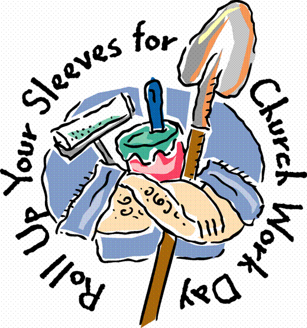

Work Day
Sunday, June 29, we will have a church work day.
Come to church dressed in your work clothes.
We will have a potluck lunch after the second service, then work in the afternoon.
Stay as long or as little as you wish.
Feel free to come and work on any project you see needs doing or just help with whatever else is happening.